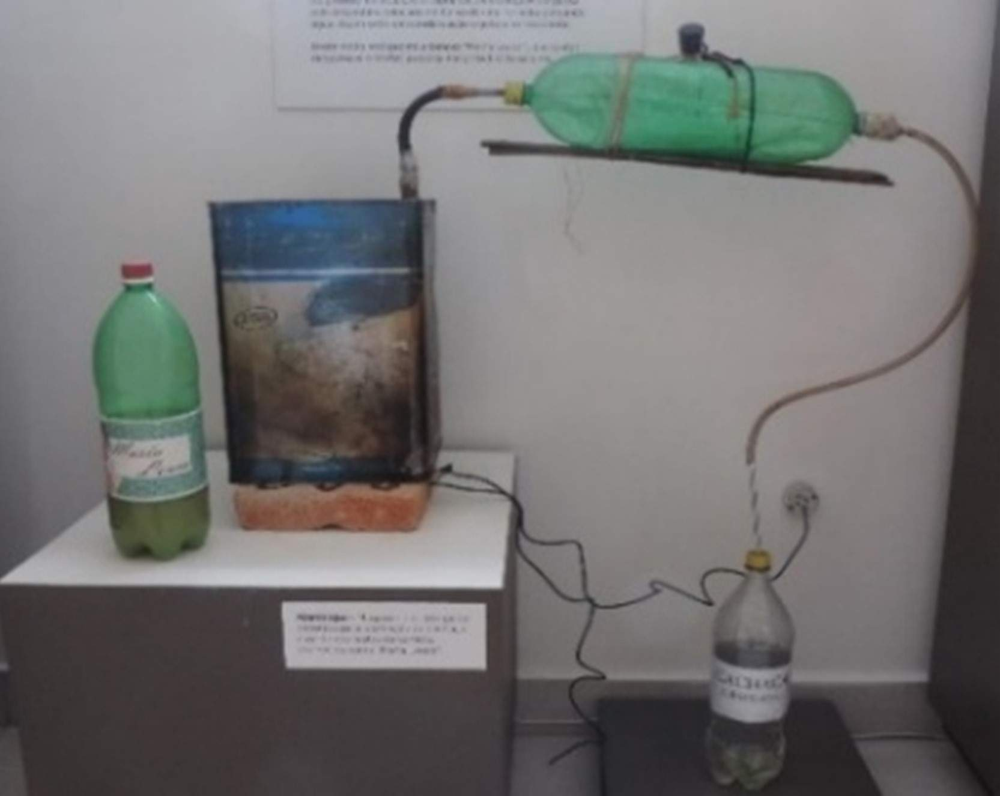
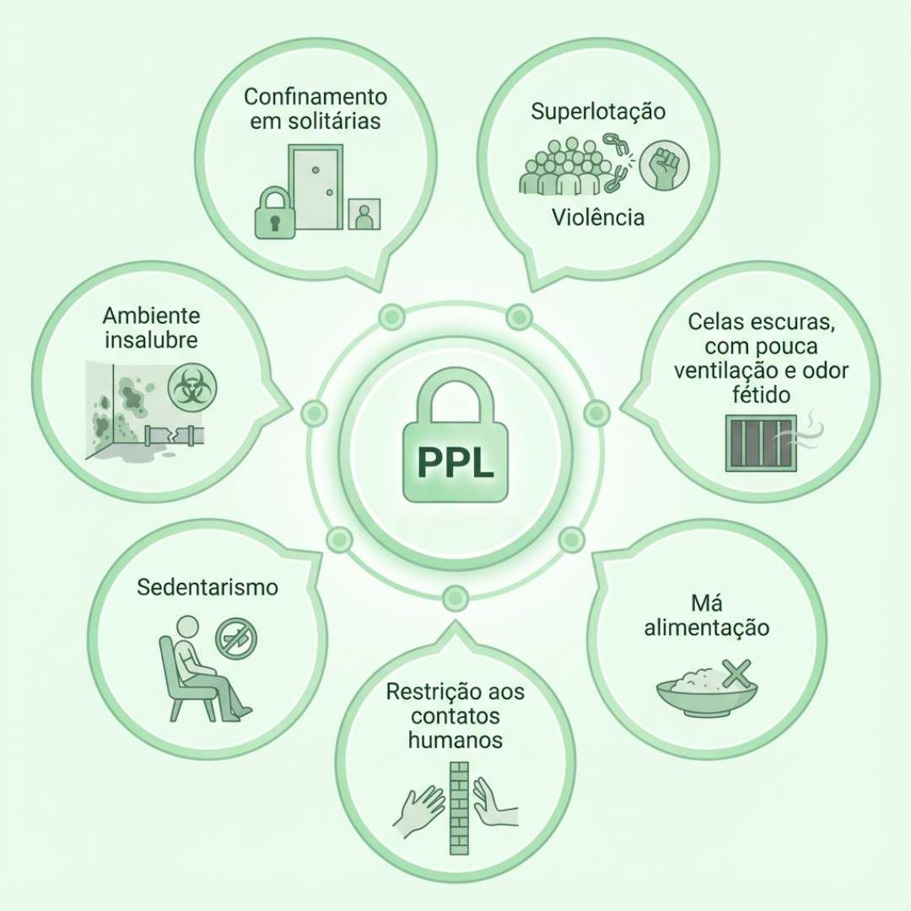

Apresentação da Unidade
Olá, estudante-trabalhador! Seja bem-vindo!
Analisaremos nesta Unidade as condições de saúde mental das pessoas privadas de liberdade (PPL) e sua relação com o aprisionamento. A maior parte da população privada de liberdade apresenta um histórico social de violência, que, somado às precárias condições de confinamento, desencadeia fatores de risco para drogadição e sofrimento mental. Dessa forma, com base na Política Nacional de Saúde Mental (PNSM) (Brasil, 2001), apresentaremos ferramentas de trabalho para colaborar com ações a serem executadas pela equipe de Atenção Primária Prisional (eAPP), ampliando a capacidade de cuidado e de intervenções terapêuticas no sistema prisional. Bons estudos!
Objetivos de Aprendizagem da Unidade
Reconhecer a organização das demandas em saúde mental observando seus fatores de proteção e de risco;
Compreender a Política Nacional de Saúde Mental e o acesso aos programas de saúde mental;
Reconhecer a importância do acesso à Rede de Atenção à Saúde no território respeitando a equidade e garantindo a qualidade;
Identificar ações de humanização da atenção à saúde mental no sistema prisional que garantam o acesso ao tratamento adequado;
Reconhecer ações de prevenção dos agravos psicossociais decorrentes do confinamento e do uso de álcool e drogas.
Carga Horária de Estudo: 5 horas
4.1 Cuidado e Tratamento em Saúde Mental
A PNSM foi sancionada em 2001 pela Lei nº 10.216, que dispõe sobre a proteção e os direitos das pessoas portadoras de transtornos mentais e tem por objetivo garantir o acesso equitativo a serviços de saúde mental e promover o cuidado psicossocial (Brasil, 2001). Considerando a complexidade do sistema prisional e as condições adversas às quais a população privada de liberdade está submetida, esses são fatores que contribuem significativamente para o surgimento e agravamento de doenças.
aspectos como ócio, superlotação, pouca quantidade de profissionais dedicados à saúde, ao serviço social e à educação, além de arquitetura precária e ambiente insalubre, [...] atuam como potencializadores de diferentes iniquidades e enfermidades [no sistema prisional].
(Constantino; Assis; Pinto, 2016, p. 2090)Algumas pessoas já ingressam no sistema prisional com sintomas psiquiátricos perceptíveis, e as que têm um quadro subclínico podem passar a apresentá-los após o aprisionamento. Há, ainda, a possibilidade de o conjunto sintomatológico surgir devido à descontinuidade do tratamento que a PPL realizava antes do aprisionamento. Com base nessa última colocação, relembramos a importância das ações de identificação desses casos, que são realizadas pelos profissionais da saúde prisional quando a pessoa ingressa na instituição penal.
Segundo a Organização Pan-Americana da Saúde (OPAS) (2022), “existem diversos transtornos mentais, com apresentações diferentes [...] caracterizados por uma combinação de pensamentos, percepções, emoções e comportamentos anormais, que também podem afetar as relações com outras pessoas”. Seguem alguns exemplos de transtornos mentais mencionados pela OPAS (2022):
- Depressão;
- Transtorno afetivo bipolar;
- Esquizofrenia e outras psicoses;
- Deficiência intelectual;
- Transtornos de desenvolvimento, incluindo o autismo.
Atenção!
Conheça as duas circunstâncias em que indivíduos com transtorno mental estão inseridos no sistema prisional:
1. Indivíduos que cometeram crimes em decorrência de sua doença mental e foram considerados inimputáveis (não são culpados pelo crime que cometeram) e, por isso, foram absolvidos e receberam medida de segurança de tratamento compulsório (Brasil, 1940);
2. Indivíduos que estão privados de liberdade cumprindo pena pelo crime que cometeram por serem considerados imputáveis ou pessoas privadas de liberdade em caráter provisório (Brasil, 1940).
Em se tratando de saúde mental das PPL, independentemente da condição jurídica em que se encontram, é de responsabilidade da Atenção Primária à Saúde (APS), sempre que forem percebidos sinais de alterações comportamentais e sofrimento psíquico sugestivos de transtorno mental, garantir-lhes o acesso ao serviço de saúde, “organizando o fluxo dos usuários entre os pontos de atenção das RAS” (Brasil, 2013).
Atenção!
Toda pessoa em sofrimento psíquico deve ter acesso à Rede de Atenção Psicossocial, independentemente de sua situação jurídica!
4.2 Rede de Atenção Psicossocial
A Rede de Atenção Psicossocial (RAPS) (Figura 1) é
um conjunto de diferentes serviços e ações disponíveis nos territórios [...] capazes de dar resposta às demandas e às necessidades [...] apresentadas pelas pessoas com transtornos mentais e/ou com problemas em decorrência do uso de álcool e outras drogas, bem como a seus familiares.
(Brasil, 2022, p. 10).Figura 1 - Rede de Atenção Psicossocial
Fonte: Universidade Federal do Maranhão (2015, p. 19).
4.2.1 Composição da Rede de Atenção Psicossocial
A RAPS é composta por seis eixos de serviços integrados por diferentes serviços e ações, todos igualmente importantes e complementares (Brasil, 2022) (Quadro 1).
Quadro 1 - Serviços integrados da Rede de Atenção Psicossocial
Vamos conhecer cada um desses serviços?
Clique para interagir
As Unidades Básicas de Saúde (UBS) - ou Unidades Básicas de Saúde Prisional (UBSP) - e a Estratégia Saúde da Família (ESF) são a porta de entrada do Sistema Único de Saúde (SUS), uma vez que identificam as pessoas que apresentam transtornos mentais e os usuários de álcool e drogas de maior complexidade e os encaminham, de forma responsável, aos serviços especializados em saúde mental de referência.
A Atenção Especializada está organizada conforme o Quadro 2, revelando que a diferença entre os CAPS acontece de acordo com sua tipologia (CAPS, CAPSi e CAPS AD) e seu porte (I, II, IIi e IV). As diferenças também determinam os horários de funcionamento, as composições das equipes e a carga horária de trabalho dos profissionais. Os CAPS, por serem serviços especializados em saúde mental, são compostos por equipes multiprofissionais que atendem tanto demandas referenciadas pela APS quanto demanda espontânea (Brasil, 2022).
Estabelecimentos e serviços do componente de Atenção Especializada:- Centros de Atenção Psicossocial (Caps), nas suas diferentes tipologias e portes: Caps I; Caps II; Caps III; Caps i; Caps AD; Caps AD III; e Caps AD IV.
- Equipe Multiprofissional de Atenção Especializada em Saúde Mental (eMAESM) tipo I, II e III.
Os CAPS baseiam-se “no atendimento intensivo e na reabilitação de pessoas com transtornos mentais mais graves e persistentes, que necessitam de processos de reabilitação por meio de oficinas, terapias, atendimentos individuais e coletivos, em programas (projetos terapêuticos) individualizados” (Brasil, 2022, p. 12).
Os serviços de Urgências e Emergências são compostos pelas Unidades de Pronto Atendimento 24 horas (UPA), Prontos-Socorros (PS) e Serviços de Atendimento Móvel de Urgência (SAMU) e Salas de Estabilização (Brasil, 2022).
A Atenção Residencial de Caráter Transitório é composta pelas Unidades de Acolhimento (UA) e pelas Comunidades Terapêuticas (CT).
As UA apresentam caráter residencial (provisório) e protetivo e servem como recurso terapêutico para pessoas com problemas decorrentes do uso de drogas (Brasil, 2022).
As CT são instituições privadas, sem fins lucrativos, e “prestam serviços de acolhimento residencial, de caráter transitório, com adesão e permanência voluntárias de pessoas com transtornos decorrentes do uso, abuso ou dependência de substâncias psicoativas” (Brasil, 2022, p. 25).
A Atenção Hospitalar é constituída pelas Unidades de Referência Especializadas em Saúde Mental em Hospitais Gerais, leitos em Hospitais Psiquiátricos Especializados e leitos em Hospital-Dia (Brasil, 2022).
Os componentes da Estratégia de Desinstitucionalização e Reabilitação são formados pelos Serviços Residenciais Terapêuticos (SRT) e Programa de Volta para Casa (PVC).
Os SRT são moradias assistidas (permanentes ou por períodos prolongados), que acolhem preferencialmente egressos de internações prolongadas com transtornos mentais graves com acentuada vulnerabilidade, sem suporte social e econômico, e sem vínculos familiares ou com vínculos frágeis. São caracterizados por duas tipologias:
- SRT Tipo I: acolhem até dez moradores com certa autonomia;
- SRT Tipo II: acolhem até dez moradores com acentuado nível de dependência, que necessitam de cuidados permanentes (Brasil, 2022).
Reflexão
Você já parou para pensar como era a situação de muitos pacientes nos manicômios dos primeiros séculos da história do Brasil? Um desses hospitais foi o Juqueri, que violou todos os direitos humanos possíveis, mas também foi fonte de inspiração para o movimento da Reforma Psiquiátrica. Abrigou doentes mentais por 122 anos e finalmente fechou suas portas em 1º de abril de 2021, quando seus últimos moradores foram realocados para as Residências Terapêuticas (RTs).
Já o PVC dispõe sobre o auxílio-reabilitação psicossocial destinado a pessoas acometidas de transtornos mentais, com história de longa internação psiquiátrica (dois ou mais anos ininterruptos) em hospitais psiquiátricos ou de custódia (Brasil, 2024a).
O auxílio-reabilitação psicossocial foi instituído pela Lei nº 10.708, de 31 de julho de 2003, para proporcionar assistência, “acompanhamento e integração social, fora de unidade hospitalar, de pacientes acometidos de transtornos mentais, internados em hospitais ou unidades psiquiátricas” (Brasil, 2003).
Agora que você já conhece a RAPS para pacientes com transtornos mentais e/ou uso (ou abuso) de álcool e de drogas e identifica o correto fluxo dentro dela, abordaremos algumas situações que acontecem nas instituições penais brasileiras e que podem ser direcionadas à RAPS, com o objetivo de garantir um atendimento integral e humanizado. Vamos lá?
4.3 Uso (ou abuso) de drogas lícitas e ilícitas nas instituições penais
Abordar a situação das PPL que fazem uso de drogas é bastante complexo e desafiador, uma vez que esse tema tem caráter proibicionista e não se fala, abertamente, sobre ele no sistema prisional brasileiro. Entretanto, as drogas fazem parte desse cotidiano e são reais e significativas (Lermen; Dartora; Capra-Ramos, 2014).
A história de uso de drogas está correlacionada com a dependência química e/ou alcoólica da pessoa antes do aprisionamento e pode estar ligada à conduta delitiva. O consumo de drogas no âmbito prisional é proibido. Entretanto, sabe-se que a PPL tem acesso, por vias ilícitas, a entorpecentes e outros produtos químicos. Segundo Varella (2017), é impossível impedir o tráfico-formiga das visitantes. Diferentes quantidades podem vir costuradas à roupa, disfarçadas no interior das sacolas com mantimentos, nos saltos de sapato, nas fraldas dos bebês, em maços de cigarro, nas bengalas e em aparelhos ortopédicos.
4.3.1 Fabricação de drogas no interior dos estabelecimentos penais
Para agravar mais a situação, há a fabricação e consumo de drogas artesanais nas instituições penais. A produção de álcool (conhecida como cachaça “Maria Louca”) é feita com água, fermento, arroz e açúcar (mais cascas de frutas, café ou cravo para dar gosto) em garrafas plásticas, que são escondidas em um buraco. Luz fornece o calor. As tampas vão sendo giradas aos poucos para que os gases saiam. O processo leva seis dias (Fortino, 2016).
Figura 2 - Alambique para produção clandestina de “Maria Louca”

Fonte: Jozino (2021).Reflexão
Quando pensamos na fabricação artesanal da “Maria Louca”, devemos considerar o processo criativo de trabalho, que exige alto nível de organização e performance. Dessa forma, é compreensível que a realização dessa prática (gerando um produto que pode ser negociado dentro do estabelecimento penal) forneça aos envolvidos certo prestígio. Espinheira (2004 apud Lima, 2019) salienta que a droga pode assumir uma função existencial, com implicações na sociabilidade, e funcionar como um dispositivo promotor de saúde mental.
Você, caro estudante-trabalhador, deve concordar que a droga é uma realidade no território das instituições penais e que ameniza as tensões do dia a dia, não é? Guimarães et al. (2006 apud Lima, 2019) relataram “que a droga é o ‘combustível da prisão’ e que sem ela a ‘prisão explode’, confirmando que o consentimento de uso de substâncias psicoativas no interior dos estabelecimentos penais exerce função de contenção”.
Um ponto importante a ser destacado também é o uso de psicofármacos nas instituições penais. Carvalho et al. (2006 apud Lima, 2019) sinalizaram que os tranquilizantes foram as drogas mais consumidas pelas mulheres privadas de liberdade como meio para lidar com a perda da liberdade e com as consequências físicas e psicológicas do aprisionamento. Quitete et al. (2012 apud Lima, 2019) evidenciaram que muitas mulheres privadas de liberdade compravam clandestinamente “calmantes” para suportar o sofrimento psíquico, fazendo com que a dispensa dos medicamentos controlados fosse um fato marcante nas instituições penais.
4.4 Dependência de drogas lícitas ou ilícitas
A dependência de drogas lícitas ou ilícitas é considerada uma doença pela Organização Mundial da Saúde (OMS) e traz males para o organismo e para toda a sociedade (Brasil, 2024b).
Quadro 2 - Diagnóstico, complicações e tratamento da dependência de drogas lícitas ou ilícitas
Forte desejo de consumir o álcool ou a droga; dificuldade de controlar o início e término do consumo; sinais de síndrome de abstinência; desenvolvimento de tolerância; prazer apenas no uso do álcool ou da droga; persistência no uso do álcool ou da droga, a despeito de consequências nocivas.
A dependência de substâncias psicoativas aumenta o risco de desenvolvimento de depressão em adultos (Brasil, 2013). Olhando por essa ótica, para as eAPP, é um desafio muito grande realizar intervenções de acordo com as demandas encontradas, porque são muitos os elementos desse universo que se configuram como fatores de risco para o adoecimento (Constantino; Assis; Pinto, 2016). Dessa forma, abordaremos o tema da depressão em ambiente prisional a fim de auxiliá-lo, caro estudante-trabalhador, no processo de tomada de decisões na atenção à saúde das PPL, bem como na elaboração de estratégias de ação mais eficazes direcionadas a esse público (Bahiano; Faro, 2022).
Figura 3 - Fatores que afetam a saúde mental das pessoas privadas de liberdade

Fonte: Damas e Oliveira (2013 apud Constantino; Assis; Pinto, 2016).Os sintomas que uma pessoa com quadro depressivo pode apresentar são: “afastamento social, fadiga, irritabilidade, choro, distúrbios do sono e alimentação, tentativas de autoagressão e suicídio, concentração e atenção reduzidas, bem como sentimento de culpa e inutilidade variando em intensidade e grau” (National Collaborating Centre for Mental Health, 2011; New Zealand, 2008 apud Bahiano; Faro, 2022).
A intervenção precoce é fundamental, o que pode ser um desafio, já que os sintomas podem se manifestar de diversas formas. Por isso, caro estudante-trabalhador, ao notar sinais de depressão, é importante realizar a intervenção adequada: encaminhar a PPL em sofrimento ao atendimento médico na UBSP.
A seguir, vamos mostrar por que o tratamento da depressão exige a atuação de uma equipe multidisciplinar (possível pela PNAISP) adaptada às necessidades individuais da PPL diagnosticada.
4.5.1 Tratamento da depressão
O tratamento da depressão é basicamente medicamentoso com possibilidades terapêuticas multiprofissionais. A eAPP deve incluir intervenções psicoeducacionais simples e, principalmente, fazer a intermediação de ações intersetoriais (saúde, educação, trabalho), visando aumentar a capacidade das pessoas com transtornos mentais graves e persistentes de exercerem sua cidadania (Brasil, 2012). A eAPP pode ainda contar com a construção e articulação dos recursos de intervenção do PTS, tema já abordado anteriormente nesta unidade.
4.5 Depressão em ambiente prisional
A depressão é uma doença caracterizada pelo transtorno do humor, que pode ser duradoura ou recorrente, prejudicando substancialmente a capacidade de funcionamento do indivíduo (Mello et al., 2021). Segundo a OMS, a depressão é um problema de saúde pública, sendo a principal causa de incapacidade em todo o mundo, podendo levar, em seu estado mais grave, ao suicídio (World Health Organization, 2017).
Para Colombaroli (2013) e Pinheiro e Cardoso (2011), “a perda do autogerenciamento de vida e as indefinições quanto ao futuro aumentam o risco de desenvolvimento de sintomas e transtornos depressivos nas pessoas privadas de liberdade” (apud Bahiano; Faro, 2022). Damas e Oliveira (2013 apud Constantino; Assis; Pinto, 2016) vinculam os sintomas de depressão não a transtornos mentais específicos, mas às condições das instituições penais (Figura 3).
Atenção!
O tratamento de homens presos com depressão é um desafio, uma vez que não costumam buscar serviços de saúde. Eles tendem a esconder questões emocionais devido ao estigma associado à fragilidade. Uma estratégia para identificar sinais clínicos de depressão é treinar policiais penais a fim de que desenvolvam habilidades para lidar com essa situação (Santos; Barros; Andreoli, 2019).
Cabe pontuar que, embora o sistema prisional imponha condições semelhantes de aprisionamento a todos, cada indivíduo apresenta processos de ajustamento e de adaptação singulares à sua experiência de perda de liberdade (Afonso; Gonçalves; Gonçalves, 2012 apud Bahiano; Faro, 2022). Dessa forma, a humanização das práticas institucionais é crucial para a redução das repercussões do aprisionamento na saúde mental. Nesse sentido, “a PNAISP é um profundo exercício de protagonizar as mudanças na qualificação e na humanização da atenção à saúde no sistema prisional”, permitindo que o sujeito, ainda que privado de liberdade, possa usar o seu direito à saúde tanto nos aspectos individuais como nos sociais (Universidade Federal de Santa Catarina, 2015).
4.6 Experiências exitosas
Nesta seção, reunimos boas práticas e iniciativas voltadas à promoção da saúde mental, da inclusão social e da ressocialização de PPL.
O objetivo é inspirar ações transformadoras, fortalecer a atuação interprofissional e ampliar o olhar sobre o cuidado integral no ambiente prisional.
Título: Jardim terapêutico promove inclusão e cuidado mental no Conjunto Penal de Barreiras
Autor: Jaqueline Assemany (2025).Descrição: leia sobre o Jardim Terapêutico Flor & Ser. Essa atividade tem o objetivo de promover o bem-estar psíquico da PPL, a inclusão, o desenvolvimento de habilidades psicomotoras e a boa convivência com os demais na instituição penal, além de reduzir sintomas de ansiedade e promover cuidado mental.
Título: Há 5 anos, projeto Direito no Cárcere vem combatendo a dependência química no presídio central
Autor: TVE RS (2016).Descrição: conheça o projeto Direito no Cárcere assistindo ao vídeo. Trata-se de uma reportagem que apresenta um programa para recuperar e ressocializar PPL. Duração: 5:53 minutos.
Título: Programa de Saúde Mental é desenvolvido em unidades prisionais do Estado
Autor: Espírito Santo (2024).Descrição: a Secretaria Estadual de Justiça do Espírito Santo realiza o programa Saúde Mental intramuros. O serviço, acompanhado por equipe multiprofissional, oferta acompanhamento às PPL que apresentam agravos emocionais decorrentes do aprisionamento, dependência química e alcoolismo.
Encerramento da Unidade
O cuidado à saúde nas demandas específicas da população LGBTIA+ é variado, mas torna-se de simples compreensão quando integrado à rotina da APS Prisional. Os trabalhadores da saúde prisional, mesmo em instituições penais que não têm alas dedicadas a essa população, se beneficiam dessa mudança de perspectiva, que passa a permear os atendimentos.
Caso seja de seu interesse, o documento citado anteriormente LGBT nas prisões do Brasil: diagnóstico dos procedimentos institucionais e experiências de encarceramento (Brasil, 2020) fornece relatos das próprias PPL em diferentes regiões sobre o cotidiano nas instituições penais, desafios enfrentados na assistência à saúde e convívio geral. Com relação aos guias de atendimento e referências, por falta de uma diretriz unificada nacional, optou-se por utilizar primariamente o manual da saúde pública da cidade de São Paulo (São Paulo, 2023). É importante contactar as secretarias de estado de saúde para averiguar a existência de protocolos regionais que devem ser seguidos.
Por fim, esperamos que, com o fim desta Unidade, seus conhecimentos sobre saúde LGBTIA+ tenham se ampliado ainda mais! Cuidar com respeito e equidade transforma realidades. Cada gesto acolhedor é um passo em direção a uma sociedade mais justa, dentro e fora dos muros das instituições penais. Você é agente dessa transformação.
Referências importantes
BRASIL. Ministério da Saúde. Secretaria de Atenção Primária à Saúde. Departamento de Ações Programáticas. Instrutivo Técnico da Rede de Atenção Psicossocial – Raps – no Sistema Único de Saúde – SUS. Brasília: Ministério da Saúde, 2022. Disponível em: http://bvsms.saude.gov.br/bvs/publicacoes/instrutivo_tecnico_raps_sus.pdf . Acesso em: 20 ago. 2025.
BRASIL. Ministério da Saúde. Secretaria de Atenção à Saúde. Departamento de Atenção Básica. Saúde mental. Brasília: Ministério da Saúde, 2013. (Cadernos de Atenção Básica, n. 34). Disponível em: https://bvsms.saude.gov.br/bvs/publicacoes/cadernos_atencao_basica_34_saude_mental.pdf . Acesso em: 25 set. 2025.
LERMEN, H. S.; DARTORA, T.; CAPRA-RAMOS, C. Drogadição no cárcere: questões acerca de um projeto de desintoxicação de drogas para pessoas privadas de liberdade. Estudos e Pesquisas em Psicologia, v. 14, n. 2, p. 539-559, 2014. Disponível em: http://pepsic.bvsalud.org/scielo.php?script=sci_arttext&pid=S1808-42812014000200009&lng=pt&nrm=iso . Acesso em: 20 ago. 2025.
LIMA, S. S. O cuidado aos usuários de drogas em situação de privação de liberdade. Physis: Revista de Saúde Coletiva, v. 29, n. 3, e290305, 2019. Disponível em: https://www.scielo.br/j/physis/a/H7VxHLTZXznx3MwxXLJWzBc/?format=html&lang=pt . Acesso em: 20 ago. 2025.
Referências
ASSEMANY, J. Jardim terapêutico promove inclusão e cuidado mental no Conjunto Penal de Barreiras. Socializa Soluções em Gestão, 6 mar. 2025. Disponível em: https://www.socializabrasil.com.br/jardim-terapeutico-promove-inclusao-e-cuidado-mental-no-conjunto-penal-de-barreiras/ . Acesso em: 20 ago. 2025.
BAHIANO, M. A.; FARO, A. Depressão em pessoas sob aprisionamento no sistema carcerário: revisão integrativa. Psicologia USP, v. 33, e210159, 2022. Disponível em: https://www.scielo.br/j/pusp/a/Js6msZmyG5fCBjTY6rdxcPP/?format=html&lang=pt . Acesso em: 20 ago. 2025.
BRASIL. Ministério da Saúde. De Volta para Casa: saúde eleva em 51% o valor do auxílio a pessoas com transtorno mental. gov.br. , 19 jun. 2024a. Disponível em: https://www.gov.br/saude/pt-br/assuntos/noticias/2024/junho/saude-eleva-em-51-o-valor-do-auxilio-a-pessoas-com-transtorno-mental . Acesso em: 20 ago. 2025.
BRASIL. Ministério da Saúde. Dependência Química é Doença e Tem Tratamento. gov.br. , 20 fev. 2024b. Disponível em: https://www.gov.br/ebserh/pt-br/comunicacao/noticias/dependencia-quimica-e-doenca-e-tem-tratamento . Acesso em: 25 set. 2025.
BRASIL. Ministério da Saúde. Secretaria de Atenção Primária à Saúde. Departamento de Ações Programáticas. Instrutivo Técnico da Rede de Atenção Psicossocial – Raps – no Sistema Único de Saúde – SUS. Brasília: Ministério da Saúde, 2022. Disponível em: http://bvsms.saude.gov.br/bvs/publicacoes/instrutivo_tecnico_raps_sus.pdf . Acesso em: 20 ago. 2025.
BRASIL. Ministério da Saúde. Secretaria de Atenção Primária à Saúde. Nota Técnica nº 67/2021-CGMAD/DAPES/SAPS/MS. 2021. Disponível em: https://egestorab.saude.gov.br/image/?file=20211216_N_InstrumentoparaAvaliacaodoRiscosPsicossociaisedeViolencia-pacientesforenses-inclusaoemSRT_7107186306922612782.pdf . Acesso em: 20 ago. 2025.
BRASIL. Protocolo clínico e diretrizes terapêuticas do tabagismo. Brasília: CONITEC, 2020. Disponível em: https://www.gov.br/conitec/pt-br/midias/protocolos/resumidos/20210113_pcdt_resumido_tabagismo.pdf . Acesso em: 20 ago. 2025.
BRASIL. Ministério da Saúde. Secretaria de Atenção à Saúde. Departamento de Atenção Básica. Saúde mental. Brasília: Ministério da Saúde, 2013. (Cadernos de Atenção Básica, n. 34). Disponível em: https://bvsms.saude.gov.br/bvs/publicacoes/cadernos_atencao_basica_34_saude_mental.pdf . Acesso em: 25 set. 2025.
BRASIL. Lei nº 10.708, de 31 de julho de 2003. Institui o auxílio-reabilitação psicossocial para pacientes acometidos de transtornos mentais egressos de internações. Diário Oficial da União, Brasília, DF, 1º ago. 2003. Disponível em: https://www.planalto.gov.br/ccivil_03/leis/2003/l10.708.htm . Acesso em: 25 set. 2025.
BRASIL. Lei nº 10.216, de 6 de abril de 2001. Dispõe sobre a proteção e os direitos das pessoas portadoras de transtornos mentais e redireciona o modelo assistencial em saúde mental. Diário Oficial da União, Brasília, DF, 9 abr. 2001. Disponível em: https://www.planalto.gov.br/ccivil_03/leis/leis_2001/l10216.htm . Acesso em: 20 ago. 2025.
BRASIL. Decreto-Lei nº 2.848, de 7 de dezembro de 1940. Código Penal. Diário Oficial da União, Brasília, DF, 31 dez. 1940. Disponível em: https://www.planalto.gov.br/ccivil_03/decreto-lei/del2848compilado.htm . Acesso em: 20 ago. 2025.
CONSTANTINO, P.; ASSIS, S. G.; PINTO, L. W. O impacto da prisão na saúde mental dos presos do estado do Rio de Janeiro, Brasil. Ciência & Saúde Coletiva, v. 21, n. 7, p. 2089-2100, 2016. Disponível em: https://www.scielo.br/j/csc/a/Ndb37V3vPt5wWBKPsVvfb7k/?format=html&lang=pt . Acesso em: 20 ago. 2025.
ESPÍRITO SANTO (Estado). Programa de saúde mental é desenvolvido em unidades prisionais do estado. Secretaria de Justiça do Espírito Santo, 2024. Disponível em: https://sejus.es.gov.br/Not%C3%ADcia/programa-de-saude-mental-e-desenvolvido-em-unidades-prisionais-do-estado . Acesso em: 20 ago. 2025.
FORTINO, L. Prisão: oficina do inferno. Superinteressante, 31 out. 2016. Disponível em: https://super.abril.com.br/historia/prisaooficina-do-inferno/ . Acesso em: 25 set. 2025.
JOZINO, J. PCC burla segurança e produz cachaça em presídio conhecido como “Supermax”. UOL, 18 maio 2021. Disponível em: https://noticias.uol.com.br/colunas/josmar-jozino/2021/05/18/pcc-burla-seguranca-e-produz-cachaca-em-presidio-conhecido-como-supermax.htm . Acesso em: 25 set. 2025.
LERMEN, H. S.; DARTORA, T.; CAPRA-RAMOS, C. Drogadição no cárcere: questões acerca de um projeto de desintoxicação de drogas para pessoas privadas de liberdade. Estudos e Pesquisas em Psicologia, v. 14, n. 2, p. 539-559, 2014. Disponível em: http://pepsic.bvsalud.org/scielo.php?script=sci_arttext&pid=S1808-42812014000200009&lng=pt&nrm=iso . Acesso em: 20 ago. 2025.
LIMA, S. S. O cuidado aos usuários de drogas em situação de privação de liberdade. Physis: Revista de Saúde Coletiva, v. 29, n. 3, e290305, 2019. Disponível em: https://www.scielo.br/j/physis/a/H7VxHLTZXznx3MwxXLJWzBc/?format=html&lang=pt . Acesso em: 20 ago. 2025.
MELLO, A. C. et al. Sintomatologia depressiva e suas repercussões na representação social da depressão: um estudo com adolescentes. Ciências Psicológicas, v. 15, n. 2, e2098, 2021. Disponível em: http://www.scielo.edu.uy/scielo.php?script=sci_arttext&pid=S1688-42212021000201211&lng=es&nrm=iso . Acesso em: 25 set. 2025.
ORGANIZAÇÃO PAN-AMERICANA DA SAÚDE. Transtornos mentais. 2022. Disponível em: https://www.paho.org/pt/topicos/transtornos-mentais . Acesso em: 20 ago. 2025.
SANTIAGO, H.; MENEZES, L. Adeus, Juquery: a nova vida dos últimos moradores do manicômio mais antigo do país. Metrópoles, 27 jun. 2021. Disponível em: https://www.metropoles.com/brasil/adeus-juquery-a-nova-vida-dos-ultimos-moradores-do-manicomio-mais-antigo-do-pais . Acesso em: 20 ago. 2025.
SANTOS, M. M.; BARROS, C. R. S.; ANDREOLI, S. B. Fatores associados à depressão em homens e mulheres presos. Revista Brasileira de Epidemiologia, v. 22, e190051, 2019. Disponível em: https://www.scielo.br/j/rbepid/a/bWsfrQZjdSHt3qSJs5PmHfR/ . Acesso em: 20 ago. 2025.
UNIVERSIDADE FEDERAL DE SANTA CATARINA. Atenção à Saúde das Pessoas Privadas de Liberdade. Acolhimento e humanização nas práticas de gestão e atenção à saúde de pessoas privadas de liberdade. Florianópolis: Universidade Federal de Santa Catarina, 2015.
UNIVERSIDADE FEDERAL DO MARANHÃO. UNA-SUS/UFMA. Redes de Atenção à Saúde: rede de atenção psicossocial - RAPS. São Luís, 2015. Disponível em: https://repocursos.unasus.ufma.br/prosaude/modulo_6/und5/media/pdf/livro.pdf . Acesso em: 2 out. 2025.
VARELLA, D. Prisioneiras. São Paulo: Companhia das Letras, 2017.
WORLD HEALTH ORGANIZATION. Depression and other common mental disorders: global health estimates. Genebra: World Health Organization, 2017. Disponível em: http://apps.who.int/iris/bitstream/10665/254610/1/WHO-MSD-MER-2017.2-eng.pdf?ua=1 . Acesso em: 25 set. 2025.
Minicurrículo do Autor
Enfermeira graduada pela Universidade Estadual de Mato Grosso do Sul (UEMS) em 1998, com uma
sólida carreira construída
no serviço público e na gestão em saúde. Possuo dupla especialização: em Administração
Hospitalar pelo Centro
Universitário Anhanguera (2009) e em Atenção Básica em Saúde da Família pela Universidade
Federal de Mato Grosso do Sul
(UFMS, 2012).
Servidora Pública Estadual desde 2009, consolidei minha trajetória na Agência Penitenciária
do Estado de Mato Grosso do
Sul (AGEPEN/MS), onde atuei por 15 anos no Módulo de Saúde do Complexo Penitenciário.
Atualmente, desde 2024, exerço a
função estratégica de Coordenadora da Assistência Farmacêutica Especializada na unidade
CAFÉ.
Além da atuação assistencial e administrativa, possuo experiência acadêmica junto à Fundação
Oswaldo Cruz (FIOCRUZ),
onde atuei como bolsista e tutora apoiadora entre 2013 e 2015, contribuindo para a formação
de profissionais no Curso de
Especialização em Gestão de Saúde do Sistema Prisional.
Currículo Lattes: http://lattes.cnpq.br/1326954249967100